手写自动微分：从标量运算到 MNIST
前言
自动微分 是 机器学习 的一个重要内容，想理解底层的话，这是不可忽略的
所以本文讲解了本人 学习 和 手写 自动微分 的相关内容，希望对读者有所帮助
实现参考 PyTorch，导入它只用来对梯度，手写部分没用到
标量自动微分
简述
自动微分 是利用 链式求导法则，在传播时算微分值。这个过程可以落在计算图上，每次用的都是已经求过的值，复合函数就能拆成基本初等函数。
分成 正向模式 和 反向模式。一般输入维度大于输出维度，所以这里用 反向模式，再结合反向传播。
反向传播是用正向算出来的误差，去算各个参数的梯度。自动微分只要对应点的梯度，代码里不用改参数。
实现
先定义一个 Tensor。这里从标量开始，后面向量也走这套，所以 data 直接用 numpy
常函数像 PyTorch 那样加 requires_grad。
加、乘、幂会碰到 广播，梯度要收回原来的形状，这段逻辑抽成 _unbroadcast，三处共用：
import numpy as np
def _unbroadcast(grad, shape):
ndims_added = grad.ndim - len(shape)
for _ in range(ndims_added):
grad = grad.sum(axis=0)
for i, dim in enumerate(shape):
if dim == 1:
grad = grad.sum(axis=i, keepdims=True)
return grad
class Tensor:
def __init__(self, data, _parents=(), _op="", label="", requires_grad=True):
if not isinstance(data, np.ndarray):
data = np.array(data, dtype=np.float64)
self.data = data
self.grad = np.zeros_like(self.data)
self._backward = lambda: None
self._prev = set(_parents)
self._op = _op
self.label = label
self.requires_grad = requires_grad
def zero_grad(self):
self.grad = np.zeros_like(self.data)
def __repr__(self):
return f"Tensor(data = {self.data}, grad = {self.grad})"
反向传播 要知道节点 拓扑序，用 dfs 做拓扑排序 就行
bfs 还要维护入度，复杂度一样，递归常数大一点：
def backward(self):
topo = []
visited = set()
def build_topo(v):
if v not in visited:
visited.add(v)
for parent in v._prev:
build_topo(parent)
topo.append(v)
build_topo(self)
self.grad = np.ones_like(self.data)
for v in reversed(topo):
v._backward()
_backward 会在各个运算里赋值
基本初等函数 有 幂、指数、对数、三角、反三角
加减乘除里，加 和 乘 是 原语，减除取负 都 fort 上去：
def __add__(self, other):
other = other if isinstance(other, Tensor) else Tensor(other, requires_grad=False)
out = Tensor(self.data + other.data, (self, other), "+")
def _backward():
# d(b+c)/db = 1, d(b+c)/dc = 1
if self.requires_grad:
self.grad += _unbroadcast(out.grad, self.data.shape)
if other.requires_grad:
other.grad += _unbroadcast(out.grad, other.data.shape)
out._backward = _backward
return out
def __radd__(self, other):
return self + other
def __mul__(self, other):
other = other if isinstance(other, Tensor) else Tensor(other, requires_grad=False)
out = Tensor(self.data * other.data, (self, other), "*")
def _backward():
# d(b*c)/db = c, d(b*c)/dc = b
if self.requires_grad:
self.grad += _unbroadcast(other.data * out.grad, self.data.shape)
if other.requires_grad:
other.grad += _unbroadcast(self.data * out.grad, other.data.shape)
out._backward = _backward
return out
def __rmul__(self, other):
return self * other
def __neg__(self):
return self * -1
def __sub__(self, other):
return self + (-other)
def __rsub__(self, other):
return other + (-self)
def __truediv__(self, other):
return self * other ** -1
def __rtruediv__(self, other):
return other * self ** -1
幂、指数、对数 同理。导数是：
$$ \frac{\partial}{\partial x}(x^y)=y\,x^{y-1},\quad \frac{\partial}{\partial y}(x^y)=x^y\ln x,\quad \frac{d}{dx}e^x=e^x,\quad \frac{d}{dx}\log_a x=\frac{1}{x\ln a},\quad \frac{d}{dx}\ln x=\frac{1}{x} $$实现里要注意几处 定义域 / 越界：
- 幂： $x=0$ 时 $x^{y-1}$ 可能变成 $0$ 的负数次方，所以
data != 0才反传对 $x$ 的梯度 - 幂对指数求导、以及 $\ln$： $x\le 0$ 时 $\ln x$ 没定义，所以
data > 0才反传对 $y$ 的梯度，log/log_a也assert真数大于 0 - 指数 $a^x$： 底数必须大于 0
def __pow__(self, other):
other = other if isinstance(other, Tensor) else Tensor(other, requires_grad=False)
out = Tensor(self.data ** other.data, (self, other), "**")
def _backward():
# d(x^y)/dx = y * x^(y-1)
if np.all(self.data != 0):
# 防止 0^负数
grad_self = other.data * (self.data ** (other.data - 1)) * out.grad
if self.requires_grad:
self.grad += _unbroadcast(grad_self, self.data.shape)
# d(x^y)/dy = x^y * ln(x)
if np.all(self.data > 0):
# 防止 ln(负数) 或 ln(0)
grad_other = (self.data ** other.data) * np.log(self.data) * out.grad
if other.requires_grad:
other.grad += _unbroadcast(grad_other, other.data.shape)
out._backward = _backward
return out
def __rpow__(self, other):
assert other > 0, "base must be positive for general exponential"
out = Tensor(other ** self.data, (self,), f"{other}**x")
def _backward():
# d(a^x)/dx = a^x * ln(a)
if self.requires_grad:
self.grad += (other ** self.data) * np.log(other) * out.grad
out._backward = _backward
return out
def exp(self):
out = Tensor(np.exp(self.data), (self,), "exp")
def _backward():
if self.requires_grad:
self.grad += np.exp(self.data) * out.grad
out._backward = _backward
return out
def log_a(self, a):
assert np.all(self.data > 0), f"log_{a} undefined for non-positive values"
assert a > 0 and a != 1, "a must be positive and not equal to 1"
out = Tensor(np.log(self.data) / np.log(a), (self,), f"log_{a}")
def _backward():
if self.requires_grad:
self.grad += (1.0 / (self.data * np.log(a))) * out.grad
out._backward = _backward
return out
def log(self):
assert np.all(self.data > 0), "log undefined for non-positive values"
out = Tensor(np.log(self.data), (self,), "log")
def _backward():
if self.requires_grad:
self.grad += (1.0 / self.data) * out.grad
out._backward = _backward
return out
三角函数、反三角函数 按导数公式挂 _backward：
arcsin / arccos 要 assert 在 $[-1,1]$ 里，否则平方根里面是负数，属于 定义域越界。
def sin(self):
out = Tensor(np.sin(self.data), (self,), "sin")
def _backward():
if self.requires_grad:
self.grad += np.cos(self.data) * out.grad
out._backward = _backward
return out
def cos(self):
out = Tensor(np.cos(self.data), (self,), "cos")
def _backward():
if self.requires_grad:
self.grad += -np.sin(self.data) * out.grad
out._backward = _backward
return out
def tan(self):
out = Tensor(np.tan(self.data), (self,), "tan")
def _backward():
if self.requires_grad:
self.grad += (1.0 / (np.cos(self.data) ** 2)) * out.grad
out._backward = _backward
return out
def cot(self):
out = Tensor(1.0 / np.tan(self.data), (self,), "cot")
def _backward():
if self.requires_grad:
self.grad += (-1.0 / (np.sin(self.data) ** 2)) * out.grad
out._backward = _backward
return out
def sec(self):
out = Tensor(1.0 / np.cos(self.data), (self,), "sec")
def _backward():
if self.requires_grad:
self.grad += (1.0 / np.cos(self.data) * np.tan(self.data)) * out.grad
out._backward = _backward
return out
def csc(self):
out = Tensor(1.0 / np.sin(self.data), (self,), "csc")
def _backward():
if self.requires_grad:
self.grad += (-1.0 / np.sin(self.data) / np.tan(self.data)) * out.grad
out._backward = _backward
return out
def arcsin(self):
# 判断 x 是否在 [-1, 1]，防止定义域越界
assert np.all(self.data >= -1) and np.all(self.data <= 1), "arcsin undefined outside [-1, 1]"
out = Tensor(np.arcsin(self.data), (self,), "arcsin")
def _backward():
if self.requires_grad:
self.grad += (1.0 / np.sqrt(1 - self.data ** 2)) * out.grad
out._backward = _backward
return out
def arccos(self):
# 判断 x 是否在 [-1, 1]，防止定义域越界
assert np.all(self.data >= -1) and np.all(self.data <= 1), "arccos undefined outside [-1, 1]"
out = Tensor(np.arccos(self.data), (self,), "arccos")
def _backward():
if self.requires_grad:
self.grad += (-1.0 / np.sqrt(1 - self.data ** 2)) * out.grad
out._backward = _backward
return out
def arctan(self):
out = Tensor(np.arctan(self.data), (self,), "arctan")
def _backward():
if self.requires_grad:
self.grad += (1.0 / (1 + self.data ** 2)) * out.grad
out._backward = _backward
return out
测试
和 PyTorch 对一下。一个经典例子 $y = \ln(x_1) + x_1 x_2 - \sin(x_2)$：
x_1_ours = Tensor(2.0)
x_2_ours = Tensor(5.0)
y_ours = x_1_ours.log() + x_1_ours * x_2_ours - x_2_ours.sin()
y_ours.backward()
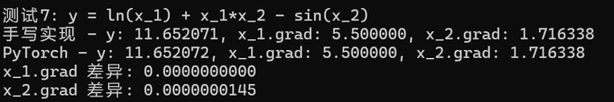
向量与广播
简述
标量那套其实已经能处理向量，因为用了 numpy。还要补 ReLU、Sigmoid、Softmax，以及 广播 的梯度。
广播 就是 自动对齐维度，低维 往 高维扩
numpy 前向会 自动广播，反向做 += 时却 不能改 左操作数 的 形状，不处理就会出错
会出现维度不同的只有 __add__、__mul__、__pow__，所以前面已经让这三处走 _unbroadcast
多出来的 维 沿着 最外层求和 降维，尺寸为 1 的维再 keepdims 求和，把 梯度 收回原来的形状
实现
非线性激活 是为了增加神经网络的 非线性拟合能力：
- ReLU（Rectified Linear Unit，线性整流）：通常就是斜坡函数 $$ f(x)=\max(0,x) $$ 导数：$x>0$ 为 $1$，否则为 $0$
- Sigmoid（逻辑函数）：连续、平滑的 S 型，把实数映到 $(0,1)$，用来做 二分类 $$ f(x)=\frac{1}{1+e^{-x}},\quad f'(x)=f(x)\,(1-f(x)) $$
- Softmax： 多分类 输出，把向量归一成概率，各项之和为 $1$ $$ \mathrm{Softmax}(i)=\frac{e^{i}}{\sum_{j}e^{j}} $$
指数项太大会 溢出。减掉最大值之后每一项都在 $(0,1)$ 里，数值就不易越界：
$$ \mathrm{Softmax}(i)=\frac{e^{i}}{\sum_{j}e^{j}}=\frac{e^{i-\max(i)}}{\sum_{j}e^{j-\max(i)}} $$Softmax 反向：
$$ \frac{\partial L}{\partial x}=\mathrm{softmax}(x)\left(\frac{\partial L}{\partial y}-\sum\frac{\partial L}{\partial y}\cdot\mathrm{softmax}(x)\right) $$ def relu(self):
out = Tensor(np.maximum(0, self.data), (self,), "relu")
def _backward():
if self.requires_grad:
self.grad += (self.data > 0) * out.grad
out._backward = _backward
return out
def sigmoid(self):
sigmoid_val = 1.0 / (1.0 + np.exp(-self.data))
out = Tensor(sigmoid_val, (self,), "sigmoid")
def _backward():
sig = 1.0 / (1.0 + np.exp(-self.data))
if self.requires_grad:
self.grad += sig * (1 - sig) * out.grad
out._backward = _backward
return out
def softmax(self, axis=-1):
# 减去最大值，防止指数项过大而溢出
x_shifted = self.data - np.max(self.data, axis=axis, keepdims=True)
exp_x = np.exp(x_shifted)
softmax_val = exp_x / np.sum(exp_x, axis=axis, keepdims=True)
out = Tensor(softmax_val, (self,), "softmax")
def _backward():
s = softmax_val
grad_input = s * (out.grad - np.sum(out.grad * s, axis=axis, keepdims=True))
if self.requires_grad:
self.grad += grad_input
out._backward = _backward
return out
另外加了 sum / mean，以及 reshape、转置 T：
def sum(self, axis=None, keepdims=False):
out = Tensor(np.sum(self.data, axis=axis, keepdims=keepdims), (self,), "sum")
def _backward():
if axis is None:
if self.requires_grad:
self.grad += np.ones_like(self.data) * out.grad
else:
grad_expanded = np.expand_dims(out.grad, axis=axis)
if self.requires_grad:
self.grad += np.ones_like(self.data) * grad_expanded
out._backward = _backward
return out
def mean(self, axis=None, keepdims=False):
out = Tensor(np.mean(self.data, axis=axis, keepdims=keepdims), (self,), "mean")
def _backward():
if axis is None:
n = self.data.size
if self.requires_grad:
self.grad += np.ones_like(self.data) * out.grad / n
else:
n = self.data.shape[axis]
grad_expanded = np.expand_dims(out.grad, axis=axis)
if self.requires_grad:
self.grad += np.ones_like(self.data) * grad_expanded / n
out._backward = _backward
return out
def reshape(self, *shape):
out = Tensor(self.data.reshape(shape), (self,), "reshape")
def _backward():
if self.requires_grad:
self.grad += out.grad.reshape(self.data.shape)
out._backward = _backward
return out
@property
def T(self):
out = Tensor(self.data.T, (self,), "transpose")
def _backward():
if self.requires_grad:
self.grad += out.grad.T
out._backward = _backward
return out
测试
ReLU 和组合 softmax(relu(x * w + b))：
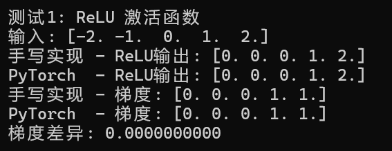
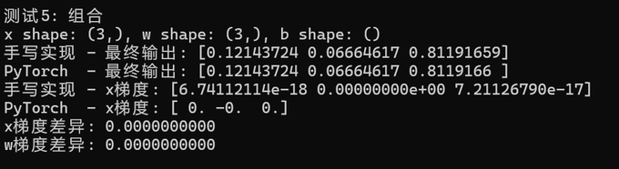
加法广播 (3,) + (2, 1)：
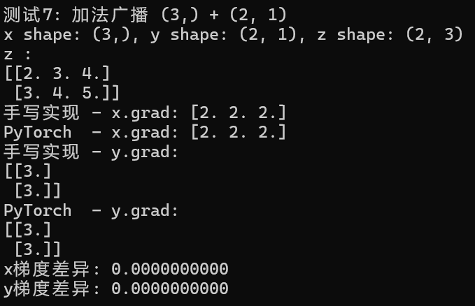
损失函数与神经网络
简述
损失函数选 MSE 和 交叉熵
网络参考 MLP（多层感知机）：在感知机上加 隐层 和 非线性激活，用来 解决非线性问题。结构是全连接、顺序容器、激活层，再用 SGD 更新。
实现
矩阵乘法 挂在 Tensor 上，全连接 会用到，反向是：
批处理用 np.swapaxes(..., -1, -2) 转置，用来 解决批处理矩阵的转置，比如 $(A,B,C)^{\mathrm{T}}=(A,C,B)$：
def matmul(self, other):
other = other if isinstance(other, Tensor) else Tensor(other, requires_grad=False)
out = Tensor(self.data @ other.data, (self, other), "matmul")
def _backward():
# d(AB)/dA = grad @ B^T
if self.requires_grad:
other_T = np.swapaxes(other.data, -1, -2)
self.grad += out.grad @ other_T
# d(AB)/dB = A^T @ grad
if other.requires_grad:
self_T = np.swapaxes(self.data, -1, -2)
other.grad += self_T @ out.grad
out._backward = _backward
return out
def __matmul__(self, other):
return self.matmul(other)
MSE 常用于 回归，看 预测 和 真实值 差多少，越小越准：
$$ MSE=\frac{1}{n}\sum_{i=1}^{n}(y_i-\hat{y}_i)^2 $$直接 mean((pred - target)^2)。
交叉熵 常用于 分类。
信息量：
$$ I(x_0)=-\log P(x_0) $$熵 是信息量的期望，也就是 无损编码 的 最小平均长度：
$$ H(P)=-\sum_{i}P(i)\log_2 P(i)=\mathbb{E}_{x\sim P}(-\log P(i)) $$真实分布是 $P$，实际用的编码分布是 $Q$，交叉熵就是：
$$ H(P,Q)=\mathbb{E}_{x\sim P}(-\log Q(i)) $$$P(i)$ 是对原始输出 logits 做 Softmax 来的。再套 $\log$ 的话，$P(i)$ 会很小，$\log$ 会变得非常小，数值不稳定
可以对 logits 做 LogSoftmax 解决 数值不稳定 的问题：先写成
$$ \log P=\log\frac{e^{\mathrm{logits}}}{\sum e^{\mathrm{logits}}}=\mathrm{logits}-\log\sum e^{\mathrm{logits}} $$这样 $e^{\mathrm{logits}}$ 很大，$\log$ 不至于太小。实现里再 减最大值防溢出。
类别索引 targets 要转成 独热编码（one-hot），才是真实分布 $P$。比如：
之后梯度是 $dL/dz=P-Y$。
class Loss:
def __call__(self, predictions, targets):
raise NotImplementedError
class MSELoss(Loss):
def __call__(self, predictions, targets):
if not isinstance(targets, Tensor):
targets = Tensor(targets, requires_grad=False)
diff = predictions - targets
return (diff ** 2).mean()
class CrossEntropyLoss(Loss):
def __call__(self, logits, targets):
if not isinstance(targets, np.ndarray):
targets = np.array(targets, dtype=np.int64)
batch_size = logits.data.shape[0]
# 减去最大值以防溢出
max_logits = np.max(logits.data, axis=-1, keepdims=True)
shifted_logits = logits.data - max_logits
log_softmax_data = shifted_logits - np.log(
np.sum(np.exp(shifted_logits), axis=-1, keepdims=True)
)
targets_onehot = np.zeros_like(logits.data)
targets_onehot[np.arange(batch_size), targets] = 1.0
correct_log_probs = log_softmax_data[np.arange(batch_size), targets]
loss_value = -np.sum(correct_log_probs) / batch_size
out = Tensor(loss_value, (logits,), "ce_loss")
def _backward():
# dL/dz = P - Y_onehot
grad_logits = (np.exp(log_softmax_data) - targets_onehot) / batch_size
if logits.requires_grad:
logits.grad += grad_logits
out._backward = _backward
return out
全连接 $y=Wx+b$，权重用 Xavier 初始化
Sequential 按层前向，parameters() 把各层参数拼起来：
class Module:
def __call__(self, *args, **kwargs):
return self.forward(*args, **kwargs)
def forward(self, *args, **kwargs):
raise NotImplementedError
def parameters(self):
return []
def zero_grad(self):
for param in self.parameters():
param.zero_grad()
class Linear(Module):
def __init__(self, in_features, out_features, bias=True):
self.in_features = in_features
self.out_features = out_features
limit = np.sqrt(6.0 / (in_features + out_features))
self.weight = Tensor(
np.random.uniform(-limit, limit, (in_features, out_features)),
label="weight",
requires_grad=True,
)
self.bias = (
Tensor(np.zeros(out_features), label="bias", requires_grad=True)
if bias
else None
)
def forward(self, x):
out = x @ self.weight
if self.bias is not None:
out = out + self.bias
return out
def parameters(self):
params = [self.weight]
if self.bias is not None:
params.append(self.bias)
return params
def __repr__(self):
return (
f"Linear(in_features={self.in_features}, "
f"out_features={self.out_features}, bias={self.bias is not None})"
)
class Sequential(Module):
def __init__(self, *layers):
self.layers = layers
def forward(self, x):
for layer in self.layers:
x = layer(x)
return x
def parameters(self):
params = []
for layer in self.layers:
params.extend(layer.parameters())
return params
def __repr__(self):
layer_str = "\n ".join(
[f"({i}): {layer}" for i, layer in enumerate(self.layers)]
)
return f"Sequential(\n {layer_str}\n)"
class ReLU(Module):
def forward(self, x):
return x.relu()
class Sigmoid(Module):
def forward(self, x):
return x.sigmoid()
class Softmax(Module):
def __init__(self, axis=-1):
self.axis = axis
def forward(self, x):
return x.softmax(axis=self.axis)
SGD 就是按梯度下降改参数，$\eta$ 是学习率：
$$ \theta \leftarrow \theta - \eta\nabla\theta $$class Optimizer:
def __init__(self, parameters, lr):
self.parameters = parameters
self.lr = lr
def step(self):
raise NotImplementedError
def zero_grad(self):
for param in self.parameters:
param.zero_grad()
class SGD(Optimizer):
def step(self):
for param in self.parameters:
if param.requires_grad:
param.data -= self.lr * param.grad
测试
MSE、全连接层梯度、两层 MLP、交叉熵都和 PyTorch 对过：
import torch
import torch.nn as nn
# MSE
predictions_ours = Tensor([2.5, 0.0, 2.1, 7.8])
targets_ours = Tensor([3.0, -0.5, 2.0, 8.0], requires_grad=False)
loss_ours = MSELoss()(predictions_ours, targets_ours)
loss_ours.backward()
# Linear
np.random.seed(42)
linear_ours = Linear(3, 2, bias=True)
x_ours = Tensor([[1.0, 2.0, 3.0], [4.0, 5.0, 6.0]])
y_ours = linear_ours(x_ours)
loss_ours = y_ours.sum()
loss_ours.backward()
# 2 层 MLP：3 -> 5 -> 2
np.random.seed(42)
model_ours = Sequential(Linear(3, 5), ReLU(), Linear(5, 2))
x_ours = Tensor([[1.0, 2.0, 3.0]])
y_ours = model_ours(x_ours)
loss_ours = y_ours.sum()
loss_ours.backward()
# CrossEntropy
logits_ours = Tensor([[2.0, 1.0, 0.1], [0.1, 2.0, 0.2], [0.2, 0.3, 2.0]])
loss_ce_ours = CrossEntropyLoss()(logits_ours, np.array([0, 1, 2]))
loss_ce_ours.backward()
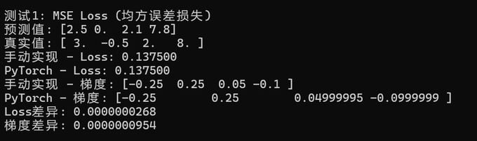
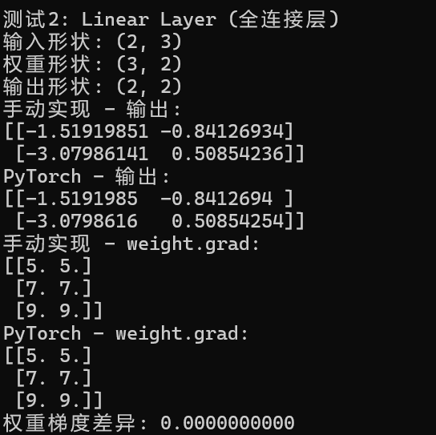
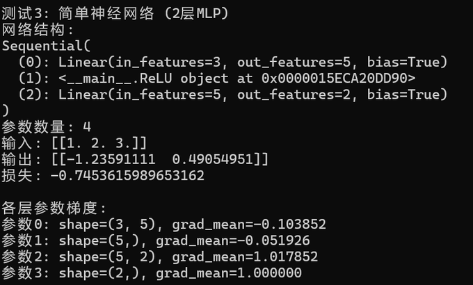
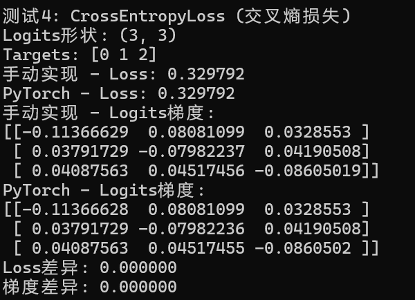
带噪声线性回归
高斯噪声 由 正态分布 产生，均值附近的值多，离均值远的少，比较接近真实世界里的随机波动。比如温度传感器每隔一秒测一次，气象、电磁干扰都会让读数抖一下，这种波动就可以建成高斯噪声
线性回归 是回归问题：预测连续值，并且假设输入和输出之间是线性关系
拿
$$ y=2x+1+\mathrm{noise} $$测，一层 Linear(1, 1)，损失 MSE，优化器 SGD，100 个 epoch，和 PyTorch 对参数：
import torch
import torch.nn as nn
import torch.optim as optim
np.random.seed(42)
X_train = np.random.randn(100, 1)
y_train = 2 * X_train + 1 + 0.1 * np.random.randn(100, 1)
X_tensor = Tensor(X_train, requires_grad=False)
y_tensor = Tensor(y_train, requires_grad=False)
X_torch = torch.tensor(X_train, dtype=torch.float64)
y_torch = torch.tensor(y_train, dtype=torch.float64)
model = Linear(1, 1, bias=True)
loss_fn = MSELoss()
optimizer = SGD(model.parameters(), lr=0.01)
model_torch = nn.Linear(1, 1, bias=True).double()
loss_fn_torch = nn.MSELoss()
optimizer_torch = optim.SGD(model_torch.parameters(), lr=0.01)
with torch.no_grad():
# PyTorch 权重是 (out, in)，这边是 (in, out)，要对一下
model_torch.weight.data = torch.tensor(model.weight.data.T, dtype=torch.float64)
model_torch.bias.data = torch.tensor(model.bias.data, dtype=torch.float64)
epochs = 100
for epoch in range(epochs):
predictions = model(X_tensor)
loss = loss_fn(predictions, y_tensor)
optimizer.zero_grad()
loss.backward()
optimizer.step()
predictions_torch = model_torch(X_torch)
loss_torch = loss_fn_torch(predictions_torch, y_torch)
optimizer_torch.zero_grad()
loss_torch.backward()
optimizer_torch.step()
if (epoch + 1) % 10 == 0:
print(
f"Epoch {epoch+1}/{epochs}, "
f"Loss (Ours): {loss.data:.6f}, Loss (Torch): {loss_torch.item():.6f}"
)
print(f"权重: {model.weight.data[0, 0]:.4f}")
print(f"偏置: {model.bias.data[0]:.4f}")
print(f"权重: {model_torch.weight.data[0, 0].item():.4f}")
print(f"偏置: {model_torch.bias.data[0].item():.4f}")
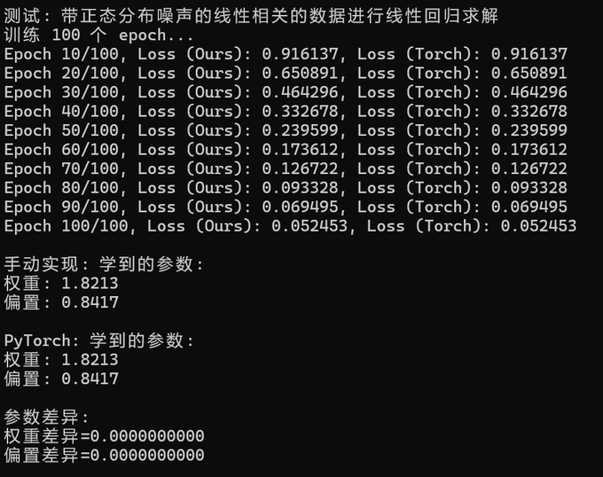
MNIST 分类
MNIST 是 0~9 手写数字
用 torchvision 下载，ToTensor 之后展成 784 维
模型是两层 MLP。
DataLoader 吐出来的是 PyTorch 张量，先转 numpy 再丢进手写的 Tensor：
from torchvision import datasets, transforms
from torch.utils.data import DataLoader, Subset
def forward_np_batch(model, x_np):
x_tensor = Tensor(x_np.astype(np.float64), requires_grad=False)
return model(x_tensor)
def evaluate_accuracy(model, data_loader):
correct = 0
total = 0
for data, target in data_loader:
x_np = data.view(data.shape[0], -1).numpy()
logits = forward_np_batch(model, x_np)
preds = np.argmax(logits.data, axis=1)
correct += (preds == target.numpy()).sum()
total += target.size(0)
return correct / total
batch_size = 64
test_batch_size = 1000
lr = 0.1
num_epochs = 100
hidden = 128
train_subset = None
transform = transforms.Compose([transforms.ToTensor()])
train_dataset = datasets.MNIST(root="./data", train=True, download=True, transform=transform)
test_dataset = datasets.MNIST(root="./data", train=False, download=True, transform=transform)
if train_subset is not None:
train_dataset = Subset(train_dataset, list(range(train_subset)))
train_loader = DataLoader(train_dataset, batch_size=batch_size, shuffle=True)
test_loader = DataLoader(test_dataset, batch_size=test_batch_size, shuffle=False)
model = Sequential(
Linear(28 * 28, hidden),
ReLU(),
Linear(hidden, 10),
)
criterion = CrossEntropyLoss()
optimizer = SGD(model.parameters(), lr=lr)
for epoch in range(num_epochs):
model.zero_grad()
optimizer.zero_grad()
train_correct = 0
train_total = 0
for data, target in train_loader:
x_np = data.view(data.shape[0], -1).numpy()
y_np = target.numpy().astype(np.int64)
logits = forward_np_batch(model, x_np)
loss = criterion(logits, y_np)
loss.backward()
optimizer.step()
optimizer.zero_grad()
preds = np.argmax(logits.data, axis=1)
train_correct += (preds == y_np).sum()
train_total += y_np.shape[0]
train_acc = train_correct / train_total
test_acc = evaluate_accuracy(model, test_loader)
print(f"Epoch {epoch+1}/{num_epochs}\ntrain_acc: {train_acc:.4f}\ntest_acc: {test_acc:.4f}")
每个 epoch 按 batch：前向 -> 损失 -> backward -> step -> 清梯度。准确度是 $\mathrm{correct}/\mathrm{total}$，测试集走 evaluate_accuracy，预测取 argmax(logits)。
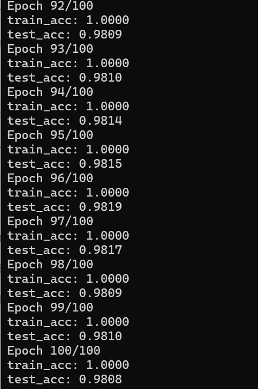
CUDA 加速
简述
-
串行运算： 有数据依赖时只能一个接一个算，像排队
-
并行运算： 多个核同时干活，最后再把结果合起来
-
CPU： 几个为核心做 顺序串行 优化，单核很强，核心少，并行吃亏。擅长流程控制、不规则数据结构、不好预测的访存、带很多分支的算法
-
GPU： 几千个更小的核心，专门同时打多份同类计算。图像在机器里就是矩阵，很多矩阵运算能拆开并行，所以训练、图像处理会走 GPU
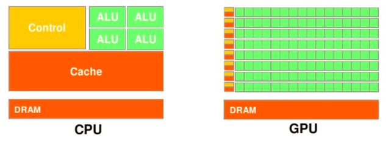
单靠 GPU 完不成一次 CUDA 计算，必须和 CPU 配合，这就是 异构计算：不同体系结构的处理器一起干活
一般 并行部分丢 GPU，串行流程留 CPU，各线程算完再把结果 拷回 CPU
实现
我这边没有 GPU 环境，只写思路了 qwq
numpy 在 CPU 上，改成 PyTorch / TensorFlow 要动的地方太多。直接换成 numpy 的 GPU 版 CuPy 就行，Tensor 那一套不用改：
try:
import cupy as np
GPU_AVAILABLE = True
except ImportError:
import numpy as np
GPU_AVAILABLE = False
def to_numpy(x):
if GPU_AVAILABLE and isinstance(x, np.ndarray):
return np.asnumpy(x)
return x
def to_gpu(x):
if GPU_AVAILABLE:
return np.asarray(x)
return x
DataLoader 吐出来的还是 CPU 张量。MNIST 那段只改进出 GPU 的三处：
def forward_np_batch(model, x_np):
x_gpu = to_gpu(x_np.astype(np.float64))
x_tensor = Tensor(x_gpu, requires_grad=False)
return model(x_tensor)
def evaluate_accuracy(model, data_loader):
correct = 0
total = 0
for data, target in data_loader:
x_np = data.view(data.shape[0], -1).numpy()
logits = forward_np_batch(model, x_np)
preds = to_numpy(np.argmax(logits.data, axis=1))
correct += (preds == target.numpy()).sum()
total += target.size(0)
return correct / total
训练循环里同样 to_gpu 再丢进 Tensor，统计准确度时 to_numpy 转回 CPU 再和标签比：
x_gpu = to_gpu(x_np)
x_tensor = Tensor(x_gpu, requires_grad=False)
logits = model(x_tensor)
loss = criterion(logits, y_np)
loss.backward()
optimizer.step()
optimizer.zero_grad()
preds = to_numpy(np.argmax(logits.data, axis=1))

说些什么吧！